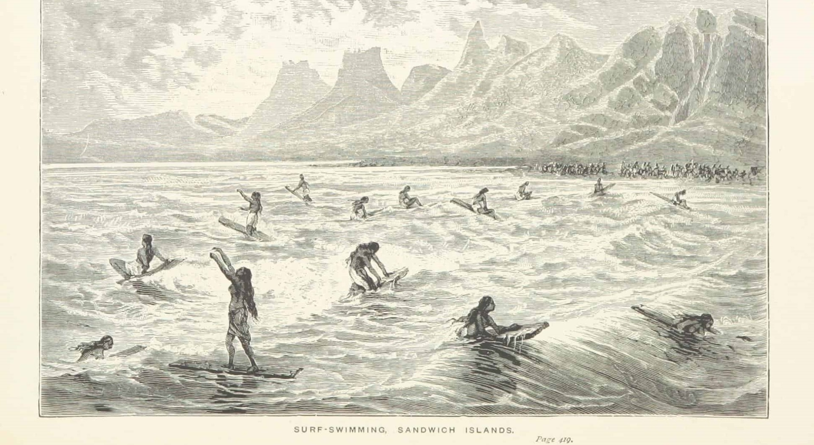

ORIGENS
He'e Nalu: O deslizar dos ancestrais
Muito antes de se tornar um esporte global, o surfe era o He'e Nalu — uma prática espiritual e social profunda nas ilhas da Polinésia. Reis e camponeses compartilhavam o oceano em pranchas esculpidas em troncos de Koa e Wiliwili. Entre para saber mais!
"O mar é o princípio e o fim de nossa linhagem. Honrar a onda é honrar o próprio sopro da vida."

HERÓSI DAS ONDAS
Grandes Nomes
O QUE SIGNIFICA
SURFISTA PREGO
A gíria se refere a alguém que surfa mal.
O QUE SIGNIFICA
SHAKA
É uma saudação havaiana que significa "Está tudo em paz, relaxa!"
O QUE SIGNIFICA
ALOHA
Aloha é uma famosa palavra havaiana que significa, literalmente, amor, compaixão e caridade.
Vamos testar o seu conhecimento?
Você acabou de mergulhar na história das maiores lendas do surfe. Agora chegou a hora de provar que você não é nenhum haole! Reme para o nosso quiz exclusivo para inscritos no site, e teste seus conhecimentos e descubra se você tem o que é preciso para ser um verdadeiro Surfista de Alma.